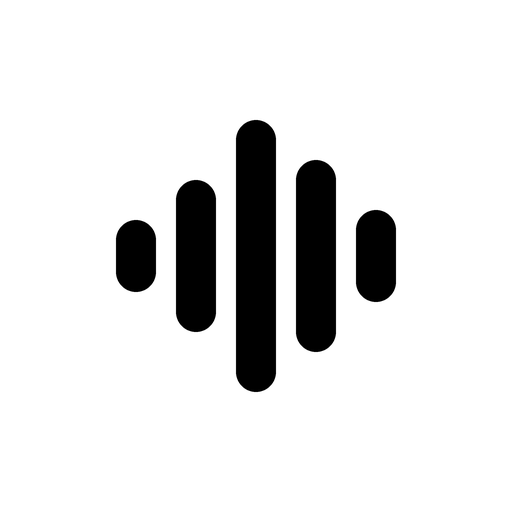
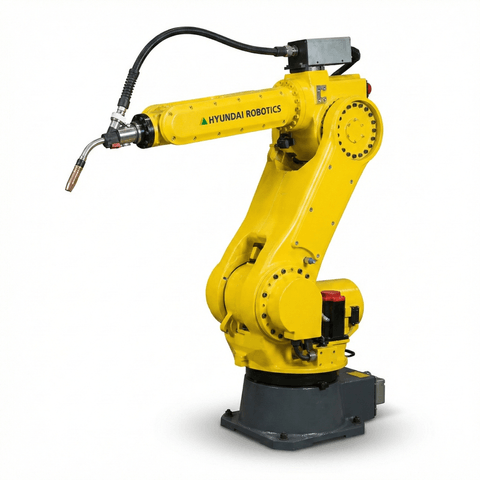

NFC 태그로 측정
버튼을 누른 뒤 설비의 NFC 스티커에 태그하세요.
측정 위치 설정 · 수동 측정
스티커를 붙인 위치에서 기준과 같은 거리와 방향으로 측정하세요.

설비 선택 · 정상 기준 등록 · 10초 측정
버튼을 누른 뒤 설비의 NFC 스티커에 태그하세요.
스티커를 붙인 위치에서 기준과 같은 거리와 방향으로 측정하세요.
마이크 연결을 기다리고 있습니다
 미측정
미측정
CNC 터닝 센터
 미측정
미측정
수직형 머시닝 센터

미측정산업용 로봇
 미측정
미측정
에어 컴프레서